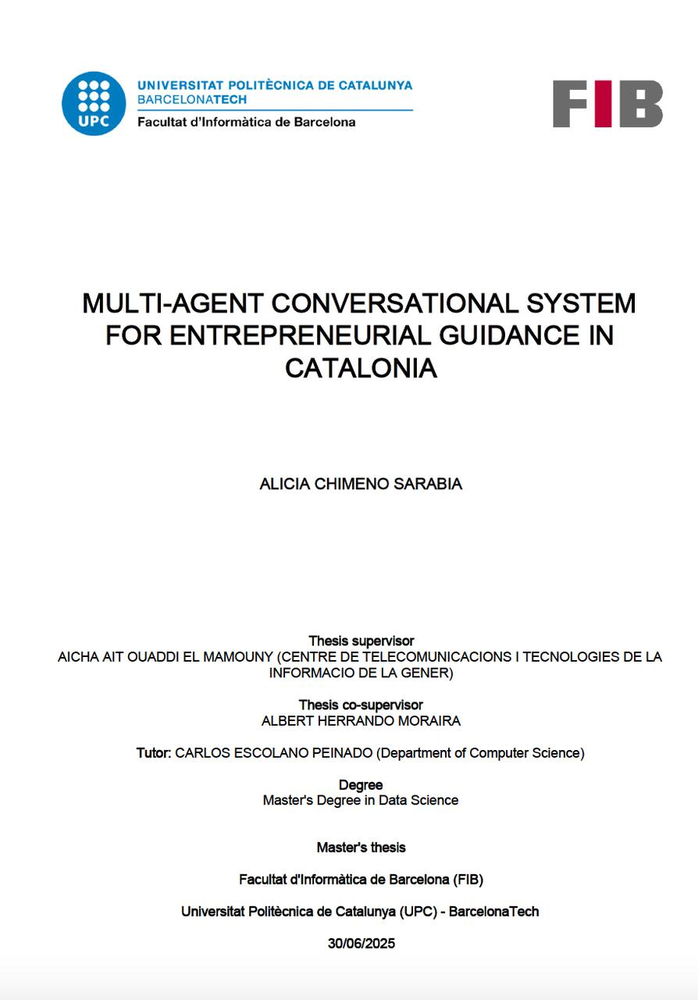
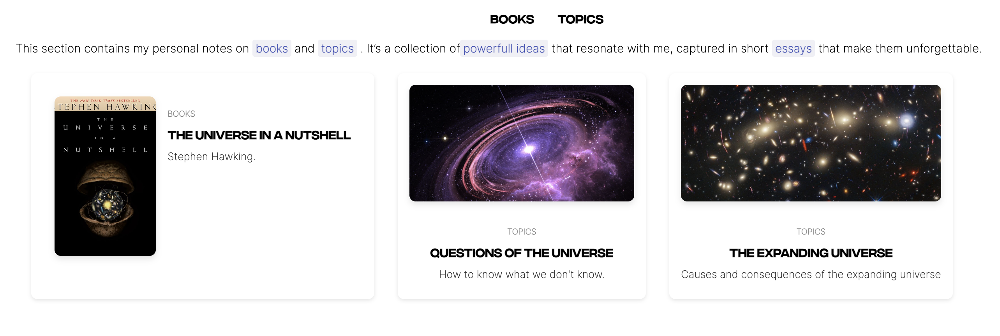
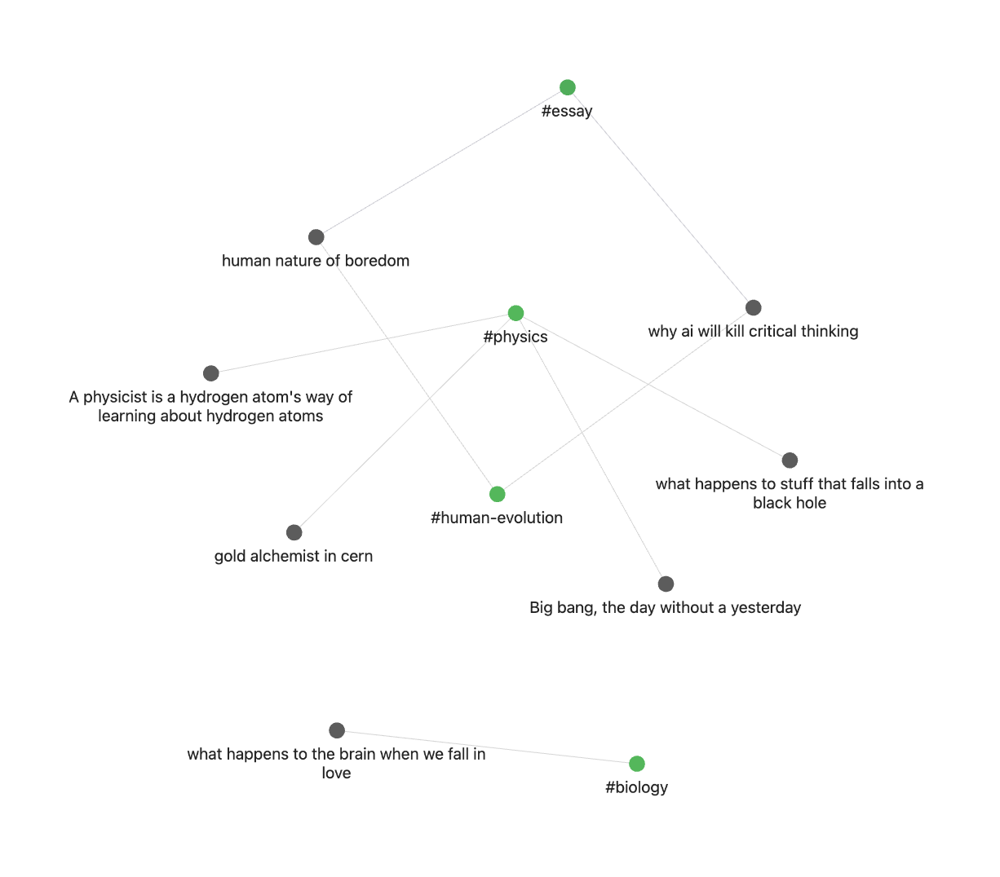

Why I should Join BSC
This section will show you why I should join you at BSC (Earth Science Depaertment).My Skills
Advanced Knowledge and Expertise in ML and AI
Good knowledge in LLMs: Gained a solid foundation in LLMs during my Master’s degree and collaborated on AI projects at CTTI, including RAG, agent-based, and multi-agent architectures, which culminated in my Master's thesis.
Proficiency in Python and experience with NLP libraries. Developed NLP projects such as:
- DDI: Extracted relationships between drug pairs mentioned in biomedical texts.
- NERC: Built a machine learning model to classify biomedical entities (drugs, brands, groups) from text.
Strong background in machine learning and deep learning. Multiple projects developed using Random Forest, XGBoost, NN, SVM some are in my Github.
Good communication skills and passionate about science
My passion for science, reading, and critical thinking has often led me to explore my role as a science communicator. I sometimes write essays on complex scientific topics with the goal of sharing the incredible world of science that many people are unaware of, and are missing out on. While my primary fascination lies with the universe, my curiosity also extends to the Earth, climate, life, air quality, atmosphere, and the physics behind nature.
Fast learner
Learning is my superpower. When I'm passionate about a topic, I devour books, write essays, and even create mini podcast episodes talking about it. Right now, I'm building a digital garden, is a graph that connects all my essays and insights into a living network of ideas.
My motivation to join BSC
Ever since I was little, I’ve been deeply fascinated by science. I vividly remember being called “nerd” plenty of times because of how enthusiastically I engaged with physics and maths classes. Honestly, I can’t blame my classmates. After all, it’s not exactly considered cool for a 12-year-old girl to bring up the Big Bang during lunch break.
For a while, that sense of being different left me feeling isolated. But over time, I realized that what set me apart was actually my greatest strength. For the first time, I felt a genuine sense of identity, math was my thing, and I was ready to embrace it.
In high school, my classmates started coming to me for help with challenging physics and math concepts, and I discovered that my passion wasn’t just for learning, it was for sharing knowledge, too. By the time I was 18, that same curious girl who once loved reading about black holes was embarking on a passionate journey to understand the world through the language of mathematics.
My passion for scientific innovation naturally led me to study Data Science and Artificial Intelligence. After almost two years immersed in the world of AI, I’ve come to realize the enormous impact it’s having on society, the good and the bad. The curious girl who once wanted to understand how we became who we are now has evolved into someone driven to explore who we will become.
While I work in AI, I remain deeply aware of its social and ethical implications. This is why I am committed to responsible AI research, ensuring that this inevitable explosion of knowledge unfolds in a way that benefits humanity as a whole.
I want to fully embrace my passion and dedicate myself to what truly ignites my curiosity. I place great importance on the social impact of my work and am deliberate about choosing collaborators who share these values. In essence, I want to use my superpower for a meaningful scientific purpose in the world. If you asked me about my dream job, it would be one that combines my two greatest passions: Earth or space sciences and artificial intelligence. I found your project which is about the use of LLMs to process and generate climate-related content incredibly fascinating, especially in how they help communicate complex scientific findings in a more accessible way.
For me, working at BSC would be a powerful source of inspiration, strengthening my commitment to becoming a role model for young women in science. BSC's dedication to advancing science for positive social impact deeply resonates with my own values. I am eager to bring my mathematical expertise, strong critical thinking, and genuine passion for making the world better through science to BSC.